Introduction to Time Series
IN2004B: Generation of Value with Data Analytics
Department of Industrial Engineering
Agenda
- Time Series
- Linear Regression Model for Time Series
- Models with Seasonality
Time Series
Load the libraries
Before we start, let’s import the data science libraries into Python.
Here, we use specific functions from the pandas, matplotlib, seaborn and sklearn libraries in Python.
What is a time series?
It is a sequence of observations collected at successive time intervals.
Time series data is commonly used in finance, economics, weather forecasting, signal processing, and many others.
Analyzing time series data helps us understand patterns, trends, and behaviors over time, enabling prediction, anomaly detection, and decision-making.
Example 1: Tesla’s stock price
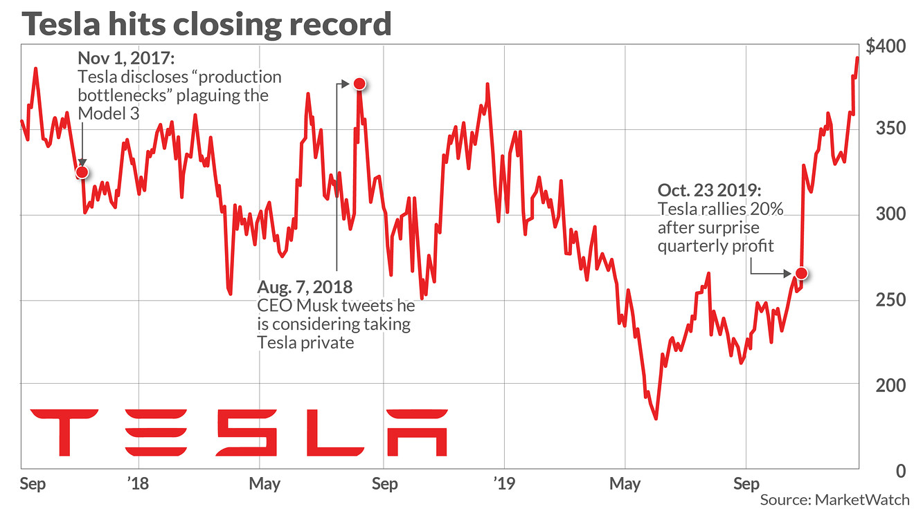Technically, a time series is a set of observations about a (discrete) predictor \(T\) and a response \(Y\).
Observations of \(Y\) are recorded at the moments or times given by the predictor \(T\).
The special feature of the time series is that the observations of \(Y\) are not independent!
| Day | T | Temperature (Y) |
|---|---|---|
| Monday | 1 | 10 |
| Tuesday | 2 | 12 |
| Wednesday | 3 | 15 |
| Thursday | 4 | 14 |
| Friday | 5 | 18 |
Example 2: Amtrak data
The Amtrak train company in the USA collects data on the number of passengers traveling on its trains.
Records are available from January 1991 to March 2004.
The data is available in “Amtrak.xlsx” on Canvas.
Time series plot in Python
We can create a line graph to visualize the evolution of Amtrak train ridership over time using lineplot from seaborn.

Informative Series
An informative time series is a series that contains patterns that we can use to predict future values of the series.
The three possible patterns are:
- Trend: the series has an increasing/decreasing behavior.
- Seasonality: the series has a repeating cyclical pattern in its values.
- Autocorrelation: the series follows a pattern that can be described by previous values of the series.
Example 3: Airline data
This series has an upper trend.
This series has cyclical patterns in its values.
Although not immediately visible, we can use the previous values of the series to describe the future ones.
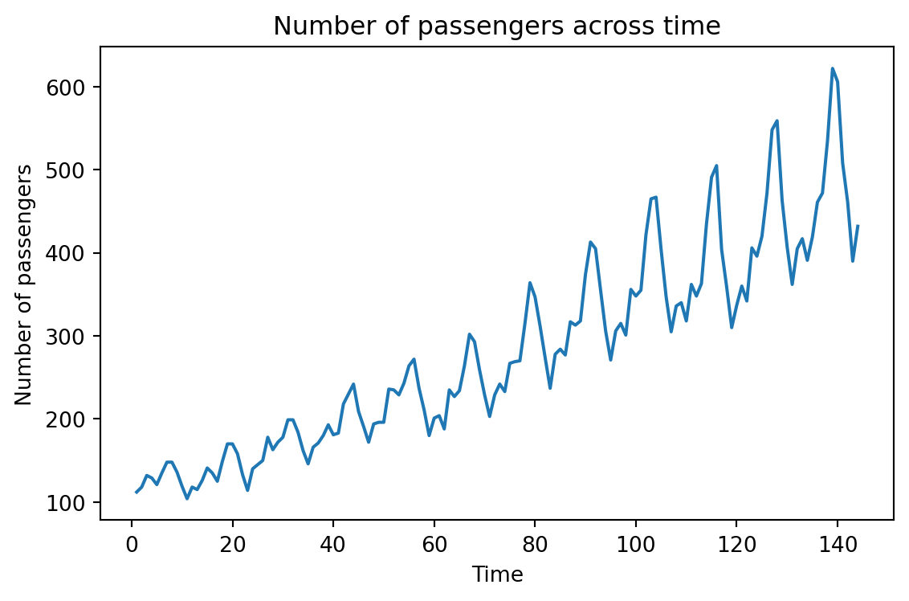
Non-informative series: White noise
White noise is a series whose values, on average, are 0 and have a constant variation.
Its values are also independent of each other.
It is used to describe random or natural error.

Linear Regression Model for Time Series
Linear regression model
The linear regression model is useful for capturing patterns in a time series. In this context, the model takes the form:
\[\hat{Y}_i = \hat{\beta}_0 + \hat{\beta}_1 T_i\]
Where \(i = 1, \ldots, n_t\) is the index of the \(n_t\) training data.
\(\hat{Y}_i\) is the prediction of the actual value of the response \(Y_i\) at time \(T_i\).
Trend
The trend of the time series is captured by the value of \(\hat{\beta}_1\) at
\[\hat{Y}_i = \hat{\beta}_0 + \hat{\beta}_1 T_i\]
If \(\hat{\beta}_1\) is positive, the series has an upward trend.
If \(\hat{\beta}_1\) is negative, the series has a downward trend.
The values of \(\hat{\beta}_0\) and \(\hat{\beta}_1\) are obtained using the least squares method.
Model evaluation
Remember that the errors of the linear regression model (\(e_i = Y_i - \hat{Y}_i\)) must meet three conditions:
On average, they must be equal to 0.
They must have the same dispersion or variability.
They must be independent of each other.
In the context of time series, this means that the model errors \(e_i\) must behave like white noise that contains no patterns.
Example 2: Amtrak data (cont.)
Let’s fit a linear regression model to the ridership data from Amtrak.
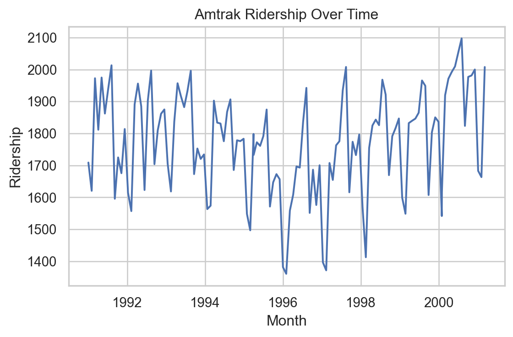
Creating a train and a validation data
In time series, the order of the data matters because each observation is tied to a specific point in time.
Because of this, we cannot randomly split the data using a function like
train_test_split().Doing so might result in a situation where the model learns from future values to predict past ones—which doesn’t make sense and would lead to overly optimistic performance.
Instead, we want to train the model on earlier time periods and test it on later ones.
To this end, we use the code below.
This code ensures that the training data always comes before the validation data in time, preserving the temporal order. The proportion of data that goes to training is set using split_ratio.
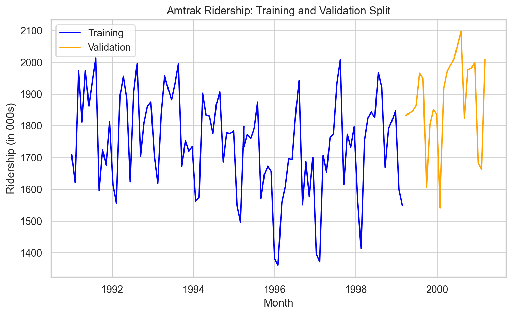
Fit linear regression model
We first set the predictor and response.
Next, we fit the model using LinearRegression() and fit() from scikit-learn.
Let’s inspect the estimated coefficient for the predictor (time).
And the intercept.
The estimated model then is:
\[\hat{Y}_i = 1810.777 - 1.281 T_i.\]
Residual analysis
We can validate the model using a residual analysis on the training data. To this end, we first compute the predicted values and residuals of the model.
Remember that we are using + Y_train*0 to visualize the objects fitted and residuals effectively.
The model is more flexible than that
If necessary, the linear regression model can be extended to capture quadratic relationships. For this, the model takes the following form:
\[\hat{Y}_i = \hat{\beta}_0 + \hat{\beta}_1 T_i + \hat{\beta}_2 T^{2}_i \]
Where \(T^{2}_i\) is the squared value of the time index.
\(\hat{\beta}_2\) is a term that captures possible curvature in the time series.
In Python
To include a quadratic term, we must augment our predictor matrix with an additional column. The following code shows how to augment X_full by the square of the Amtrak_data['t'] column. This is done using the pandas .concat() function. The resulting matrix is stored in X_quad.
Next, we follow the same steps to fit this model.
We show the estimated coefficients in Python.
Intercept = [1866.84019635]
Coefficients = [[-4.64563238 0.03397778]]The estimated model thus is
\[\hat{Y}_i = 1866.84 - 4.65 T_i + 0.03 T^2_i.\]
Residual analysis
Code
# Remember to use the same `X_quad`
Y_pred_quad = QuadmodelAmtrak.predict(X_quad) + Y_train*0
residuals_quad = Y_train - Y_pred_quad
# Construct a pandas data.frame
residual_data_quad = pd.DataFrame()
residual_data_quad["Fitted"] = Y_pred_quad
residual_data_quad["Residuals"] = residuals_quad
residual_data_quad["Time"] = residuals_quad.index
plt.figure(figsize=(8, 6))
sns.scatterplot(data = residual_data_quad, x = "Fitted", y = "Residuals")
plt.axhline(y=0, color='red', linestyle='--')
plt.xlabel("Fitted Values (Y_pred_quad)")
plt.ylabel("Residuals")
plt.title("Residuals vs. Fitted Values")
plt.show()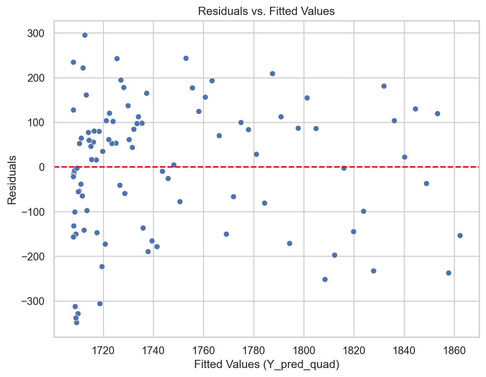
Model evaluation using validation data
Remember that another way to evaluate the performance of a model is using the \(\text{MSE}_v\) or \(\text{RMSE}_v\) on the validation data.
To this end, we need some Python objects.
Let’s compute the \(\text{RMSE}_v\) for the linear regression model.
Y_val_pred_lin = LRmodelAmtrak.predict(X_valid)
mse = mean_squared_error(Y_valid, Y_val_pred_lin)
print(round(mse**(1/2), 2))250.03Let’s do the same for the the linear regression model with a quadratic term.
X_quad_valid = pd.concat([X_valid, Amtrak_validation['t']**2], axis = 1)
Y_val_pred_quad = QuadmodelAmtrak.predict(X_quad_valid)
mse_quad = mean_squared_error(Y_valid, Y_val_pred_quad) # Mean Squared Error (MSE)
print(round(mse_quad**(1/2), 2))173.99We conclude that the linear model with a quadratic term is better than the linear regression model because the \(\text{RMSE}_v\) of the former is smaller than for the latter.
Predictions of linear model.
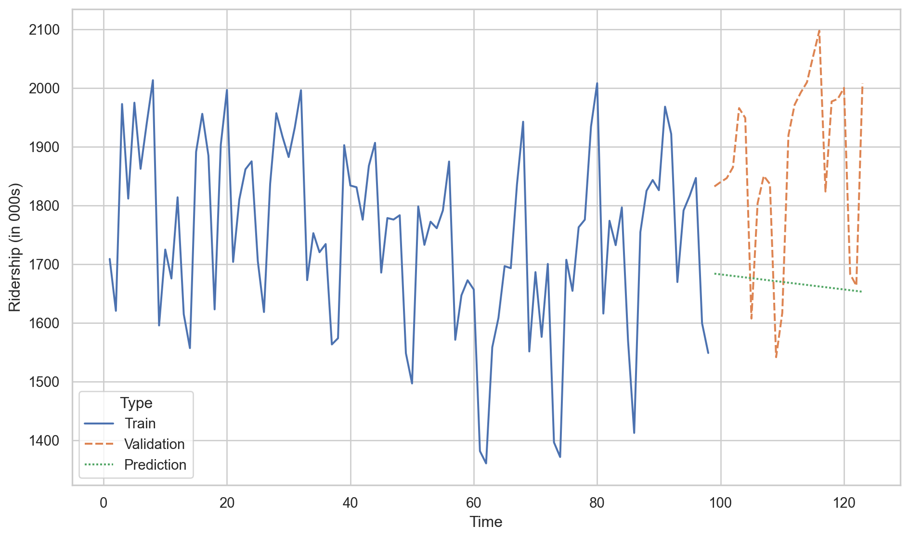
Predictions of linear model with quadratic trend.
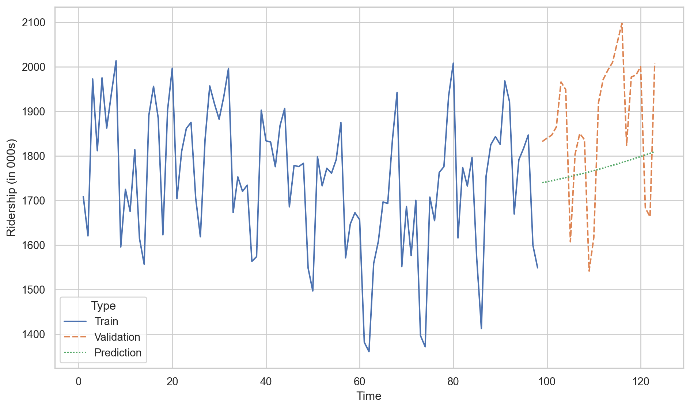
Activity (solo mode)
The Office of Transportation Statistics of the Innovative Research and Technology Administration conducted a study to assess the impact of the September 11, 2001, terrorist attack on U.S. transportation. The report analyzes monthly passenger movement data from January 1990 to May 2004. Time series data are provided for (1) Real Revenue Passenger Miles Traveled (Air RPM), (2) Rail Passenger Miles Traveled (Rail PM), and (3) Car Miles Traveled (VMT).
In this activity, you will fit different linear regression models to data in the file “Sept11Travel.xlsx” in CANVAS.
Identifying Heteroskedasticity
Heteroskedasticity arises when the dispersion of model errors is not constant over time.
To see it, let’s go back to the Airline data, which contains the number of passengers of an international airline per month between 1949 and 1960.
For illustrative purposes, we will not split the time series into training and validation datasets.
Let’s fit a linear regression model.
Residual analysis
Heteroskedasticity: Dispersion of the residuals increases with the predicted value.
Code
# Remember to use the same `X_quad`
Y_pred = LRmodelAirline.predict(X_full) + Y_full*0
residuals = Y_full - Y_pred
# Construct a pandas data.frame
residual_data = pd.DataFrame()
residual_data["Fitted"] = Y_pred
residual_data["Residuals"] = residuals
residual_data["Time"] = residuals.index
plt.figure(figsize=(6, 4))
sns.scatterplot(data = residual_data, x = "Fitted", y = "Residuals")
plt.axhline(y=0, color='red', linestyle='--')
plt.xlabel("Fitted Values (Y_pred_quad)")
plt.ylabel("Residuals")
plt.title("Residuals vs. Fitted Values")
plt.show()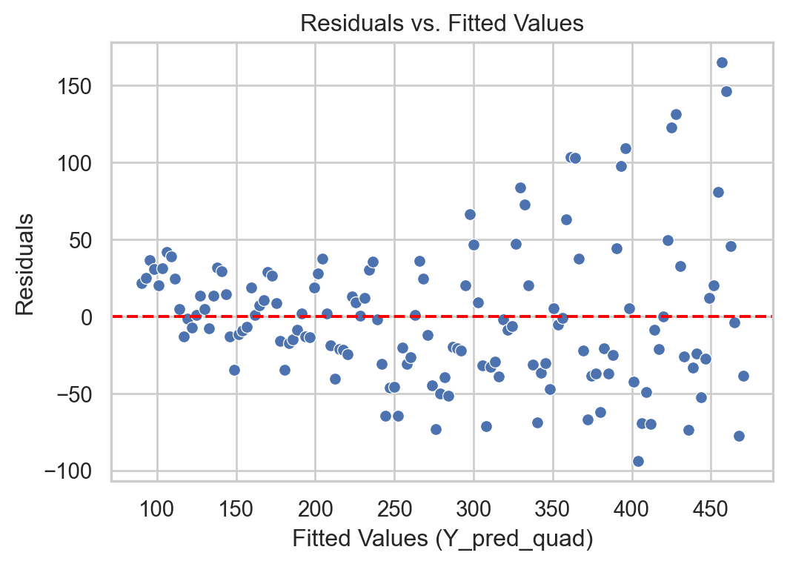
Solution
If we identify heteroskedasticity in the regression model errors, we have several transformation options for our original series.
A common transformations to the time series \(Y_i\) is the Natural Logarithm
If the original time series contains negative values, it can be lagged by adding the negative of its minimum value.
In Python
The easiest way to apply the logarithm in Python is to use the log() function from the numpy library
Now, the response to use is in log_Y_full.
The steps to fit a linear regression model are similar.
Residual analysis
With transformation
Code
# Remember to use the same `X_quad`
Y_pred_log = LRmodelAirlineTransformed.predict(X_full) + log_Y_full*0
residuals_log = log_Y_full - Y_pred_log
# Construct a pandas data.frame
residual_data_log = pd.DataFrame()
residual_data_log["Fitted"] = Y_pred_log
residual_data_log["Residuals"] = residuals_log
residual_data_log["Time"] = residuals_log.index
plt.figure(figsize=(6, 4))
sns.scatterplot(data = residual_data_log, x = "Fitted", y = "Residuals")
plt.axhline(y=0, color='red', linestyle='--')
plt.xlabel("Fitted Values (Y_pred_quad)")
plt.ylabel("Residuals")
plt.title("Residuals vs. Fitted Values")
plt.show()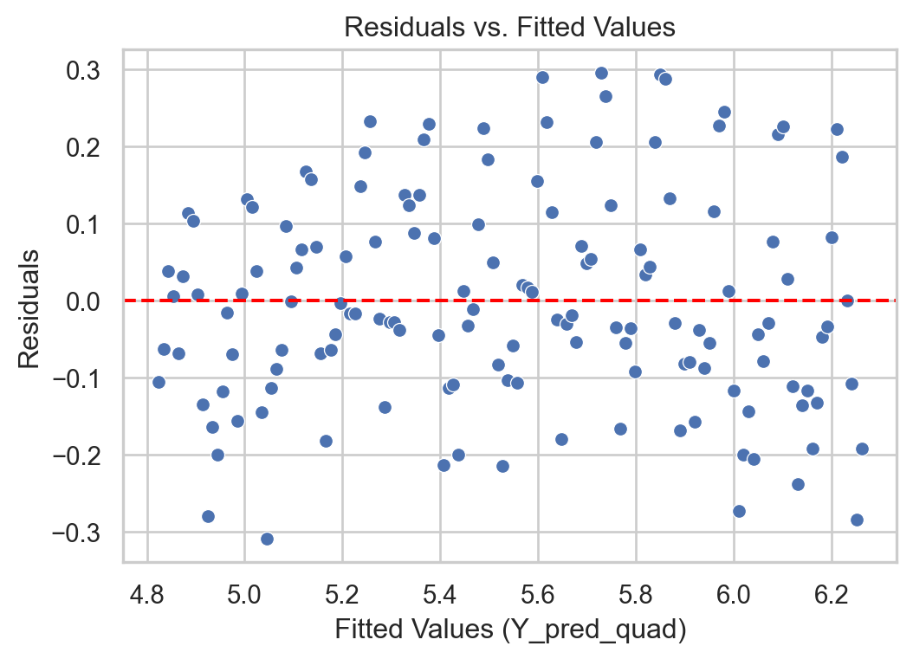
Without transformation
Code
# Remember to use the same `X_quad`
Y_pred = LRmodelAirline.predict(X_full) + Y_full*0
residuals = Y_full - Y_pred
# Construct a pandas data.frame
residual_data = pd.DataFrame()
residual_data["Fitted"] = Y_pred
residual_data["Residuals"] = residuals
residual_data["Time"] = residuals.index
plt.figure(figsize=(6, 4))
sns.scatterplot(data = residual_data, x = "Fitted", y = "Residuals")
plt.axhline(y=0, color='red', linestyle='--')
plt.xlabel("Fitted Values (Y_pred_quad)")
plt.ylabel("Residuals")
plt.title("Residuals vs. Fitted Values")
plt.show()
What do I do if the transformation doesn’t work?
If the log transformation doesn’t significantly reduce heteroskedasticity, there are models for modeling variance called GARCH.
You can find literature on these models and their software implementations in a time series textbook such as Time Series Analysis with Applications in R by Cryer and Chan.
Models with Seasonality
Seasonality
Seasonality refers to repetitive or cyclical behavior that occurs with a constant frequency.
Examples:
Demand for winter clothing
Demand for tourist travel
Amount of rainfall throughout the year.
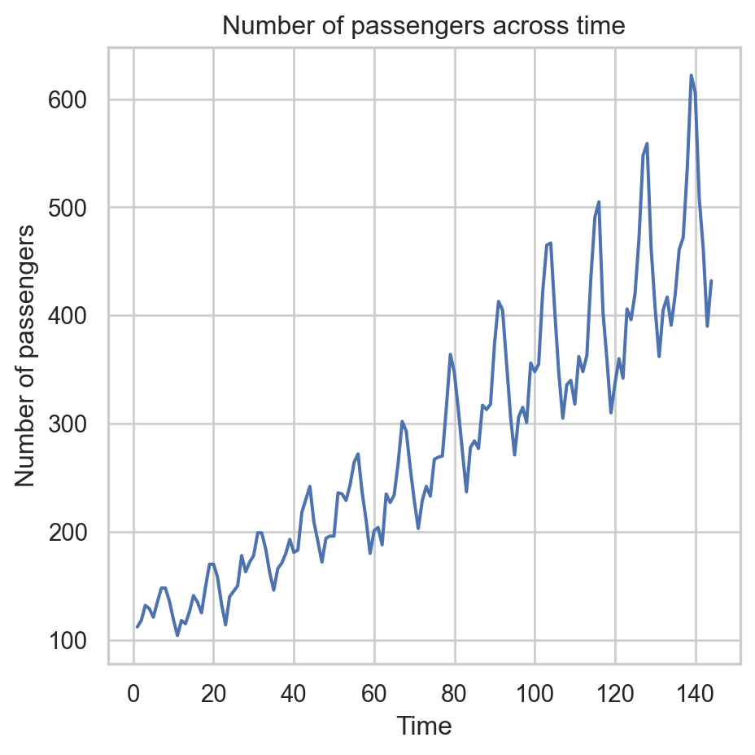
Capturing seasonality
The linear regression model can be extended to capture seasonal patterns in the time series.
To do this, an additional categorical predictor is created that indicates the season to which each data item belongs.
The additional categorical predictor is transformed into several auxiliary numerical predictors.
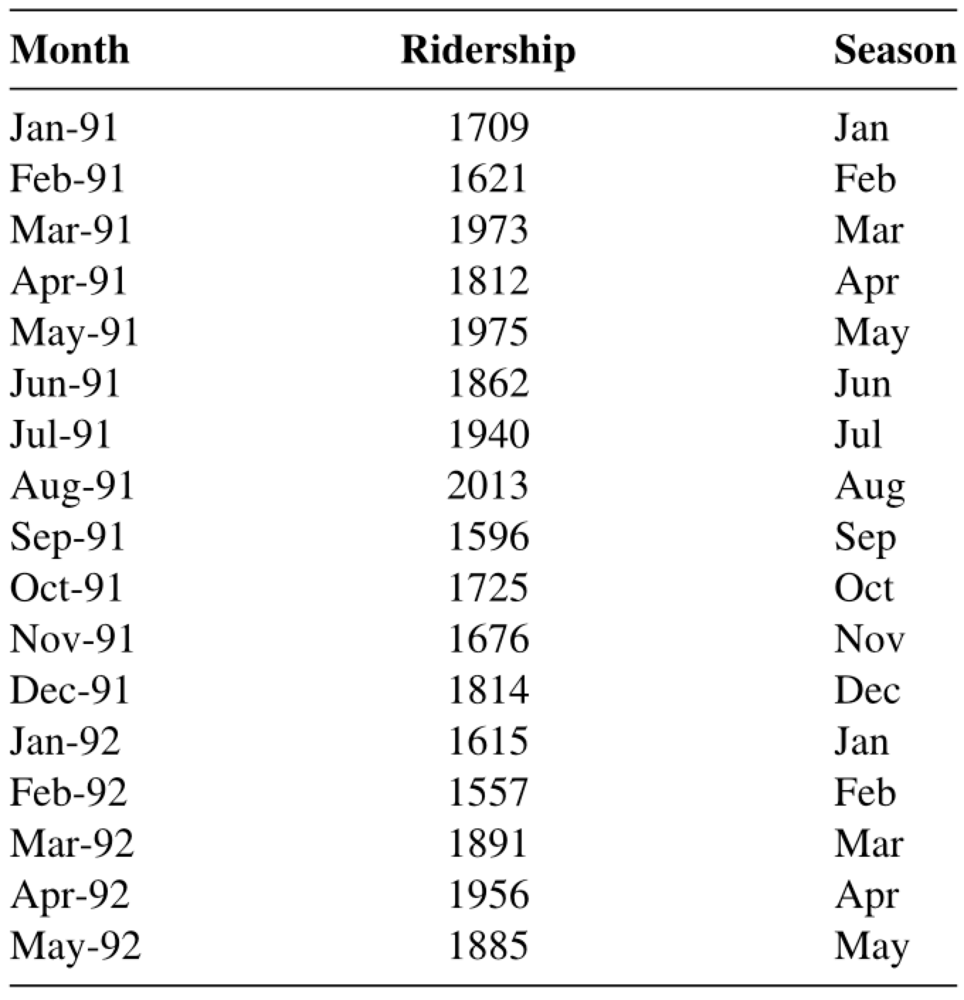
Analyzing seasonal series in Python
Consider the data in Amtrak_train with the additional predictor of Season to model seasonality.
| Month | t | Ridership (in 000s) | Season | |
|---|---|---|---|---|
| 0 | 1991-01-01 | 1 | 1708.917 | Jan |
| 1 | 1991-02-01 | 2 | 1620.586 | Feb |
| 2 | 1991-03-04 | 3 | 1972.715 | Mar |
| 3 | 1991-04-04 | 4 | 1811.665 | Apr |
| 4 | 1991-05-05 | 5 | 1974.964 | May |
To fit a linear regression model with a categorical variable like Season, we must transform the text categories into numbers. To do this, we use dummy variables constructed using the following commands.
The matrix above contains one column for each month. Each column indicates the observations that belong to the month of the column. For example, the column Apr has the values 0 and 1. The value 1 indicates that the corresponding observation belongs to the month of April. A 0 indicates otherwise.
| Apr | Aug | Dec | Feb | Jan | Jul | Jun | Mar | May | Nov | Oct | Sep | |
|---|---|---|---|---|---|---|---|---|---|---|---|---|
| 0 | 0 | 0 | 0 | 0 | 1 | 0 | 0 | 0 | 0 | 0 | 0 | 0 |
| 1 | 0 | 0 | 0 | 1 | 0 | 0 | 0 | 0 | 0 | 0 | 0 | 0 |
| 2 | 0 | 0 | 0 | 0 | 0 | 0 | 0 | 1 | 0 | 0 | 0 | 0 |
| 3 | 1 | 0 | 0 | 0 | 0 | 0 | 0 | 0 | 0 | 0 | 0 | 0 |
Unfortunately, we cannot use the matrix as is in the linear regression model due to multicollinearity issues. Technically, this happens because if you add all the columns, the resulting column is a column of 1s, which is already used by the intercept. Therefore, you cannot fit a model with the intercept and all the columns of the dummy variables.
To solve this problem, we arbitrarily remove a column from the matrix above. For example, let’s remove Dec.
Now, let’s build the complete matrix of predictors, including the column for time, time squared, and the dummy variables.
Next, we fit the model with all the terms in the matrix above.
Estimated model coefficients
print("Intercept = ", SeasonmodelAmtrak.intercept_)
print("Coefficients = ", SeasonmodelAmtrak.coef_)Intercept = 1924.3205889003025
Coefficients = [-6.12171259e+00 4.96085283e-02 1.22309969e+01 1.77720172e+02
-2.83088245e+02 -2.25659158e+02 1.15685204e+02 -7.31735621e+00
1.59876604e+01 5.17037414e+01 -4.77796001e+01 -3.19949172e+01
-1.45366826e+02]Residual analysis
Predictions on the validation dataset
Prepare the validation data using dummy variables.
Now, we compute the validation \(\text{RMSE}_v\).
Predictions of the linear model with seasonality.
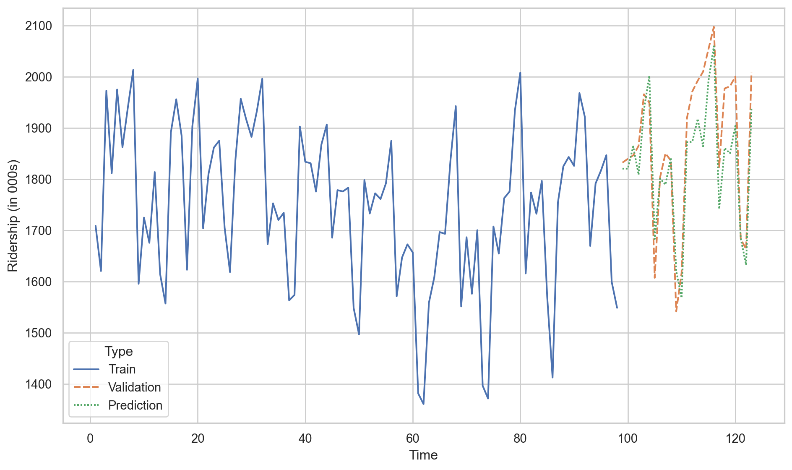
Disadvantages of linear regression
Despite their simplicity and versatility, linear regression models are not the best for describing a time series.
This is because they do not assume a dependency between consecutive values in the time series. That is, they do not use the fact that, for example, \(Y_1\) can help us predict \(Y_2\), and \(Y_2\) can help us predict \(Y_3\), etc.
Models that help us use past observations to predict future values of the response variable \(Y\) are autoregressive models.
Yogi Berra
It’s though to make predictions, especially about the future.
Return to main page

Tecnologico de Monterrey